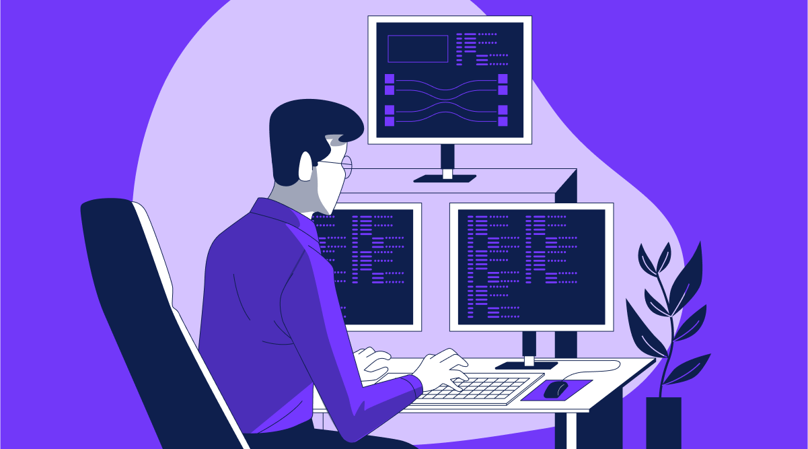
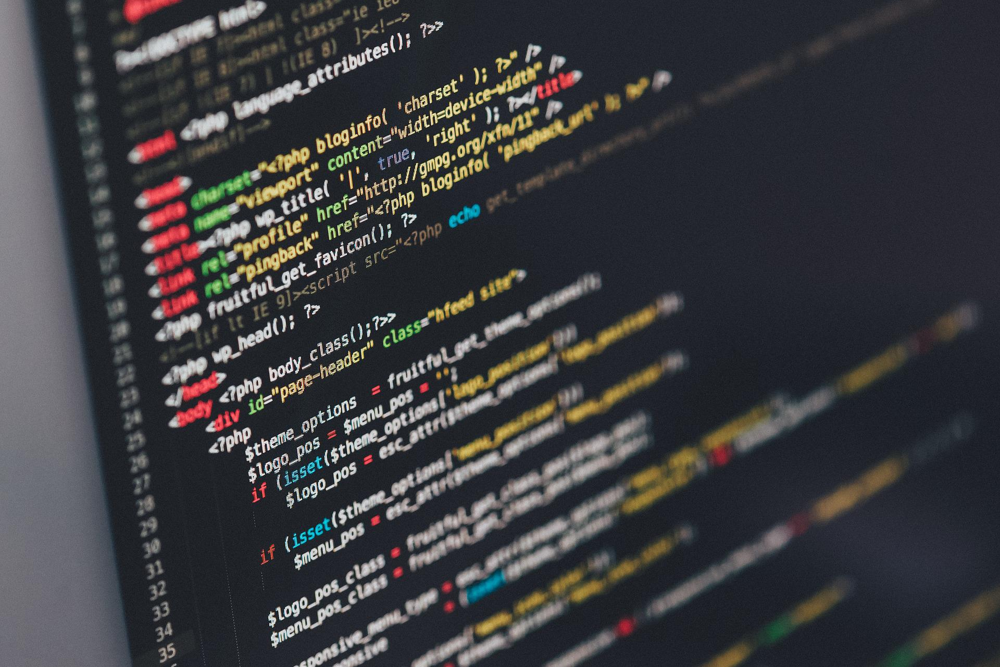

Ryzyko zawodowe to prawdopodobieństwo wystąpienia zagrożeń związanych z wykonywaną pracą, które mogą powodować urazy, choroby zawodowe lub pogorszenie stanu zdrowia pracownika. Stanowisko programisty jest zaliczane do prac biurowych o niskim poziomie zagrożeń wypadkowych. Nie występują tu maszyny przemysłowe, praca na wysokości czy kontakt z niebezpiecznymi substancjami. Jednak mimo pozornie bezpiecznego środowiska pracy, zawód ten wiąże się z wieloma zagrożeniami zdrowotnymi o charakterze długotrwałym – zarówno fizycznym, jak i psychicznym.

Programista to osoba zajmująca się:
Praca odbywa się głównie:
Środowisko pracy jest statyczne, co oznacza małą aktywność ruchową i długotrwałe obciążenie tych samych partii mięśni.
Najczęstsze zagrożenia fizyczne związane z pracą programisty to:
Długotrwałe ignorowanie tych objawów może prowadzić do poważniejszych schorzeń.
Stres i presja czasu
Wypalenie zawodowe
Izolacja społeczna
Długotrwały stres może prowadzić do problemów ze snem, obniżonej odporności oraz zaburzeń koncentracji.
Do zagrożeń ergonomicznych zaliczamy:
Zagrożenia organizacyjne obejmują:
Nieprawidłowa organizacja pracy zwiększa ryzyko zarówno problemów zdrowotnych, jak i spadku efektywności.
W przypadku stanowiska programisty:
Ocena ryzyka zawodowego powinna być przeprowadzana przez pracodawcę i aktualizowana w razie zmian organizacyjnych lub technologicznych.
Celem oceny ryzyka jest minimalizacja zagrożeń oraz poprawa warunków pracy.
Higiena pracy:
Profilaktyka psychiczna:
Stanowisko programisty jest uznawane za stosunkowo bezpieczne pod względem wypadków fizycznych, jednak wiąże się z istotnymi zagrożeniami zdrowotnymi.
Największe ryzyko dotyczy:
Odpowiednia ergonomia, regularne przerwy oraz właściwa organizacja pracy pozwalają znacząco ograniczyć ryzyko zawodowe.
Dbałość o zdrowie pracownika przekłada się bezpośrednio na jego efektywność, komfort pracy oraz jakość wykonywanych obowiązków.